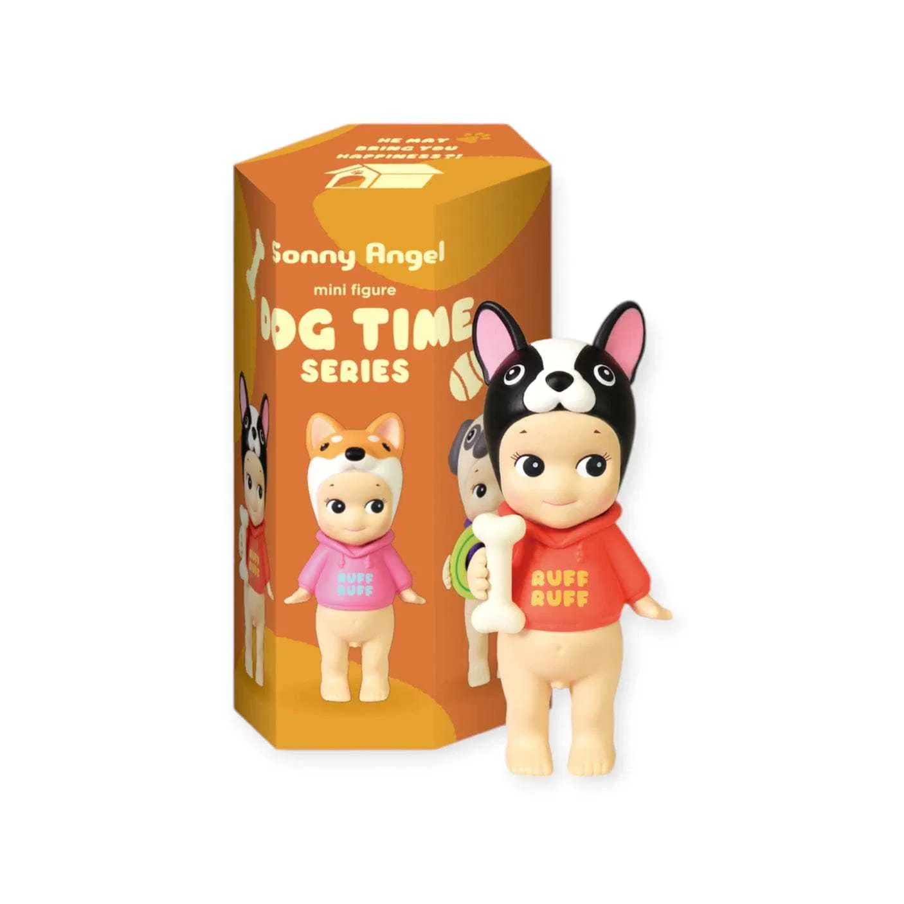
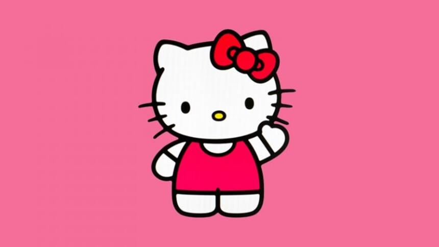
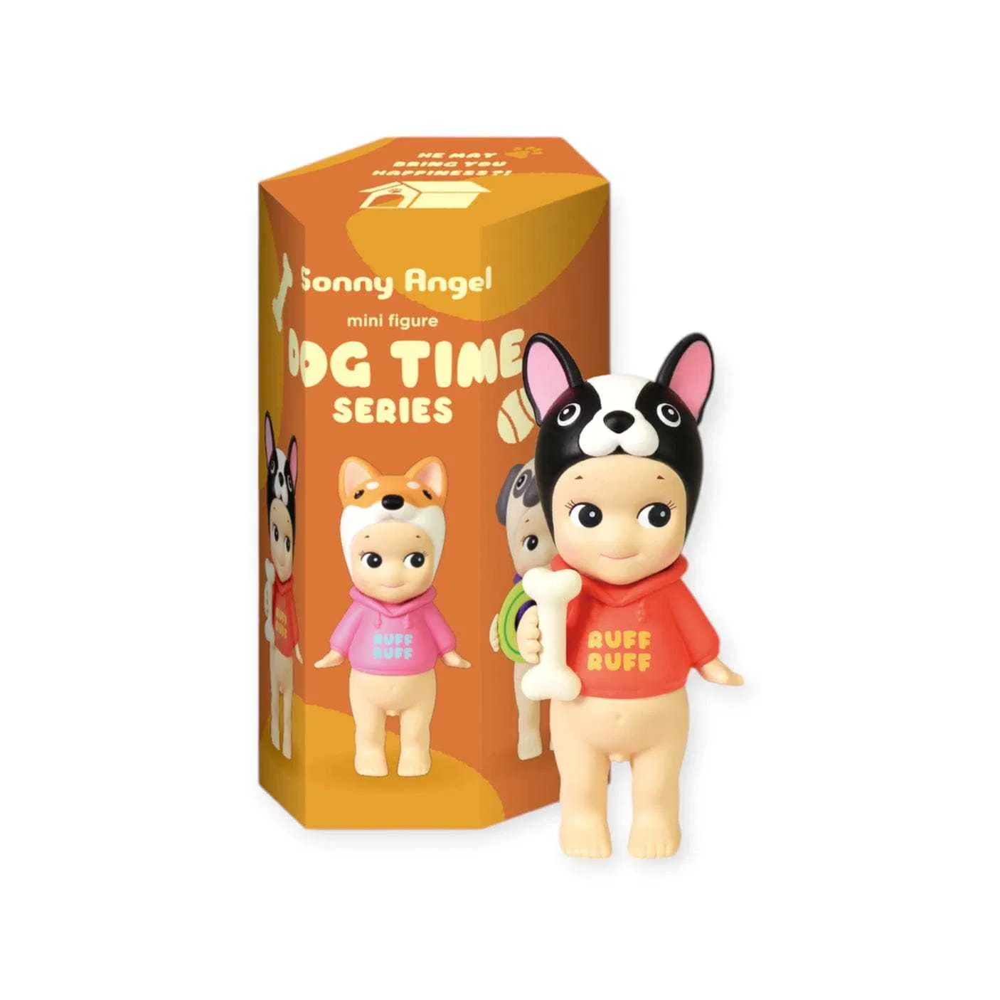
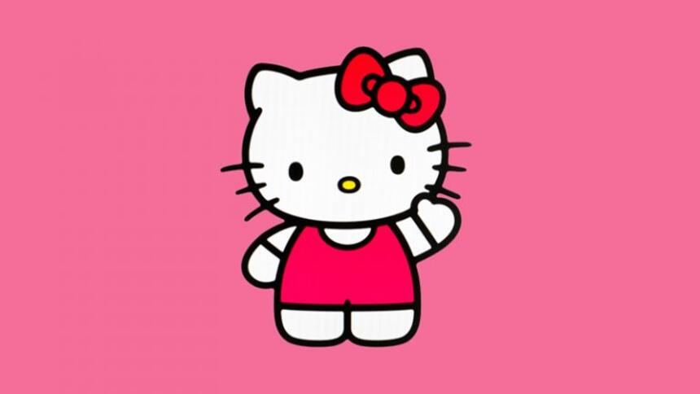
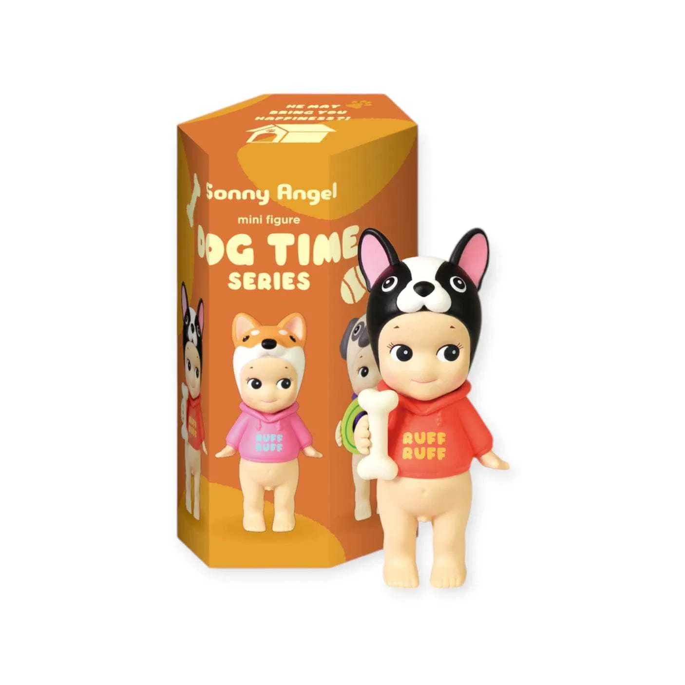
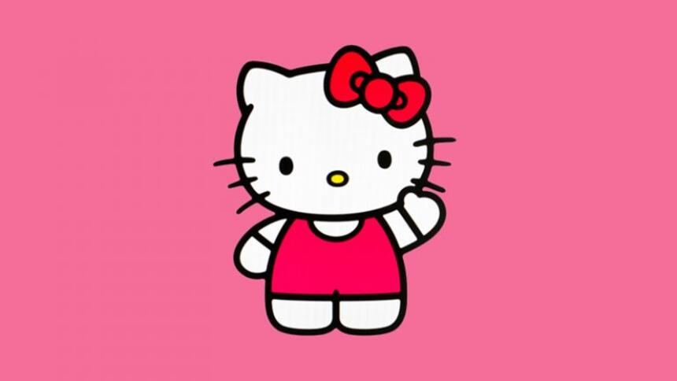

Mój słodziaczku kolorowy, kochany:
Wszystkiego najlepszego ci życzę
Bądź szczęśliwa, nie smuć się, bo jesteś naj naj
Życzę również powodzonka w pracy licencjackiej, zdasz to na spokojnie :))
Obyś była zdrowa jak rybka, bo cb potrzebuje na conajmniej 88 lat przy sobie!!!

